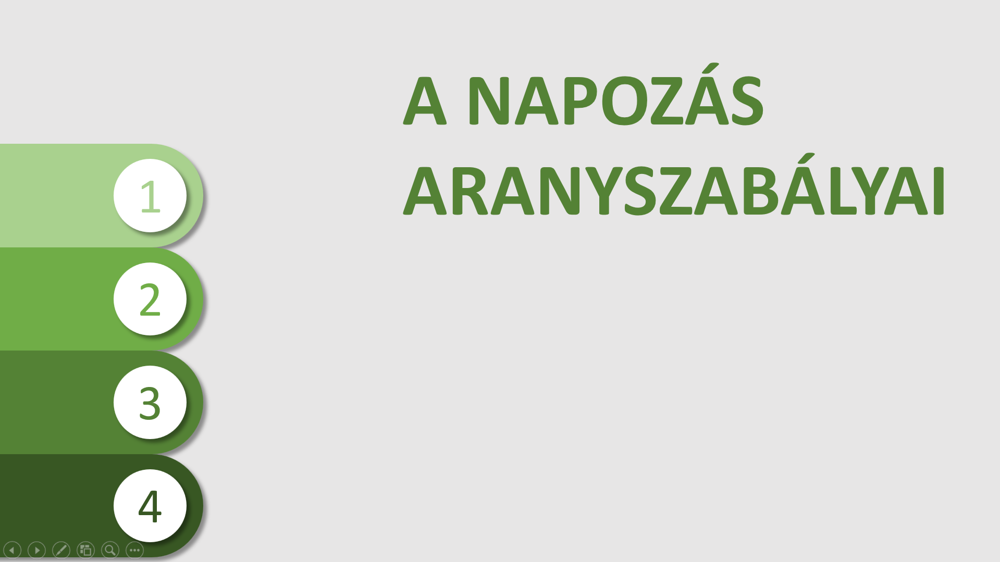
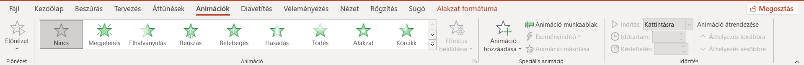
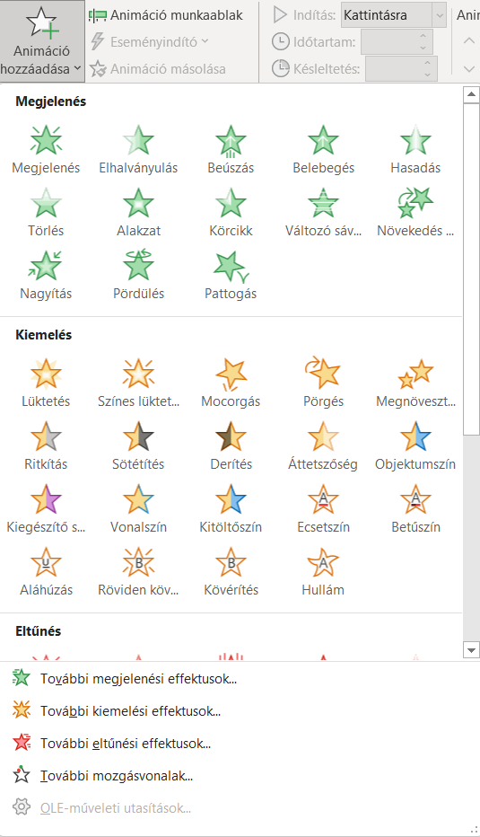
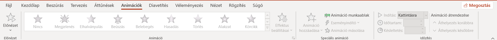
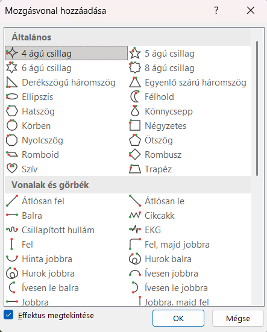
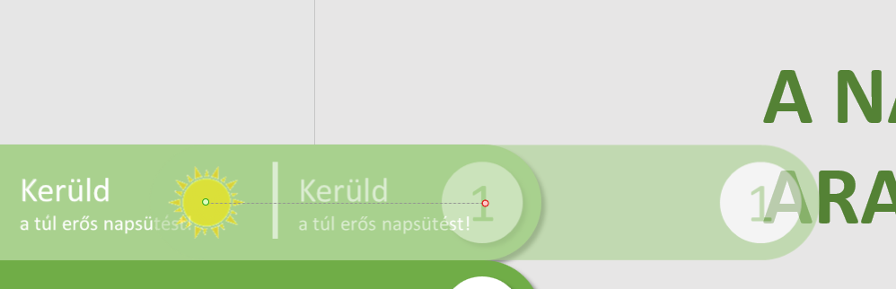
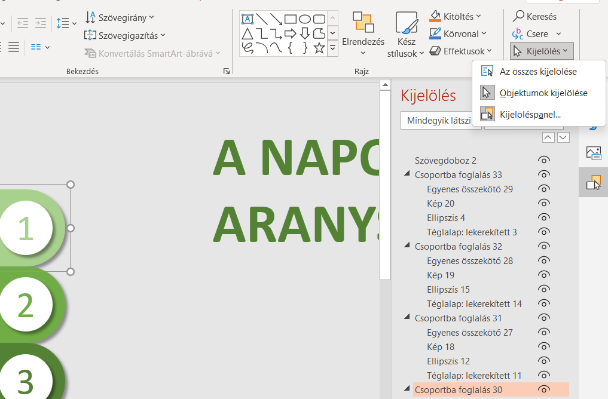

Ebben a dokumentumban egy rövid feladatot kaptok: azt nézzük meg, hogy hogyan lehet kicsit máshogy animálni egy ppt-t, mint ahogy eddig csináltuk. A múltkor közösen készített napozas.pptfájlba fogunk dolgozni. Ha nincs meg a sajátod vagy csak egyszerűbb, akkor nyugodtan használd azt a fájlt, amit ide kattintva találsz. Bármelyiket is választod, nyisd most meg!
Egy kis segítség: ha így formázott részt látsz, arra rákattintva extra magyarázat vagy kép jelenik meg.
A mostani egy remek alkalom ennek ellenőrzésére. Kattints az egyik sávra, és húzd odébb! Ha minden egyben mozog, akkor ezt a lépést helyesen csináltad meg.
Ha nem egyben mozognak, akkor állítsd vissza a megfelelő elhelyezést, pl. a ctrl + z billentyűkombinációval, jelöld ki az összes alkotóelemet a Shift nyomva tartása közben, majd kattints jobb egérgombbal az egyik kijelölt elemre, válaszd a csoportosítás lehetőséget, és azon belül is a csoportosítás pontot!
Most mind a négy sávot úgy kell elhelyeznünk, hogy a szöveg már ne látszódjon, csak a szám a végén a körben.
Egy tipp: ha úgy húzod a kijelölt objektumot, hogy közben nyomva tartod a Shift gombot, vagy csak az x, vagy csak az y tengely mentén tudod mozgatni. Ez most segíthet, és később is jól jön!
A végső cél most egy ilyen kinézet, így mozgasd tehát az elemeidet!

Az animációk, amelyek egy-egy objektumra vonatkoznak, négy csoportba vannak rendezve a PowerPointban. A zöld kategória a megjelenési animációké, ezek mondják meg, hogy hogyan kerüljön egy-egy elem a diára. A piros az eltűnési animációkat jelzi, ezek mondják meg, hogy hogyan tűnjön el valami a diáról, pl. ha egy képet csak egy rövid időre szeretnénk felvillantani. A sárga kategória a kettő közti: ha valami (az animáció előtt és után) a dián volt és ott is marad, akkor használhatunk kiemelési animációt. Ez pl. megrezgeti az elemet vagy megváltoztatja a méretét. A negyedik kategória valamilyen pályán mozgatja az elemet. Ezek a mozgásvonalak, ezekre lesz szükségünk most.
Jelöld ki az első lekerekített sávot! Menj az Animációk fülre, és válaszd ki az animáció hozzáadása pontot, azon belül pedig a További mozgásvonalak... lehetőséget!
Előfordulhat, hogy az animációk fülön semmire sem tudsz kattintani. Ez azért lehet, mert animációt csak konkrét objektumokhoz tudunk rendelni. Ha nincs kijelölve egy elem sem a dián, akkor ezek a pontok nem kattinthatók.
A További mozgásvonalak párbeszédablakban válaszd ki a jobbra lehetőséget!
Ha kiválasztod a jobbra lehetőséget, a program megmutatja, mi fog történni. Okézd le a párbeszédablakot, majd nézd meg alaposan ezt a fenti csíkot! Két réteget látsz egymáson és egy halvány szaggatott vonalat egy zöld és egy piros végponttal. Kattints most a pirosra, és húzd jobbra úgy, hogy a halvány objektumon a szöveb és a napocska is a dia határán belülre kerüljön!
Emlékszel? Ha húzás közben nyomva tartod a Shift gombot, biztos, hogy csak egy tengely mentén fogod mozgatni az objektumot. Ez a mozgásvonalakra is érvényes!





Az Animációk fülön kattints az Eseményindító leheőtségre! Válaszd ki a menüből a legfelső lehetőséget!
Ha olyan sorrendben haladtál mindennel, mint én, akkor a legelső lehetőségnek ennek kellene lennie. Ha biztosra akarsz menni, akkor a Kezdőlap fülön válaszd ki a Kijelölés, majd a Kijelöléspanel pontot! Itt megnézheted az egyes csíkok pontos nevét, vagy dupla kattintással akár meg is változtathatod azokat.
Ellenőrizd, hogy mindent jól csináltál-e! Nyomd meg az F5-öt, és kattints a fenti csíkra! Ha becsúszik a diára, akkor eddig jó!
Egy ilyen animáció akkor néz ki jól, ha gyorsan indul és lassan ér véget. Az egész viszont nem lehet túl lassú, mint most. Az Animáció fülön kattints az Animáció munkaablak lehetőségre! A jobb oldalon megjelenik egy sáv, ahol egy elemet látsz, fölötte az Eseményindító: Csoportba foglalás x felirattal. Kattints jobb gombbal az elemre, majd válaszd ki az Effektus beállításai... lehetőséget! A megnyíló párbeszédablakban tudjuk pontosan beállítani a részleteket.
A fokozatos indítást húzd le 0-ra, a fokozatos befejezést viszont húzd fel a legnagyobb értékre (ez most 2 másodperc)! A pattogás maradjon 0-n, de pipáld ki az oda-vissza jelölőt! Ezzel most az animáció egyre lassulva fog lejátszódni, és teljes beúszás után vissza fog térni a kiindulási pozícióba, fordított sebességgel, tehát előbb lassan, aztán egyre gyorsulva.
Menj át az Időzítés fülre! Itt az időtartamot állítsd át 1 másodpercre!
Az időzítésnél nem csak az itt megadott értékek közül választhatsz, hanem megadhatsz kézzel is értékeket, ha arra van szükség. Az itteni beállítások közt lehet elérni olyanokat is, amik hatására pl. egy szöveg szavanként vagy karakterenként jelenik meg animálva.
Készen vagy az animáció beállításaival, innen már könnyen fog menni, hiszen tudod, hogy mit kell csinálni. Na nem csak azért, mert most véigcsináltuk, hanem azért is, mert ha egyszer már mindent megfelelően beállítottál, akkor konkrétan két kattintás objektumonként, hogy ugyanezt alkalmazd másokra is.
Az Animációk fülön az Animáció munkaablak alatt kattints az Animáció másolása lehetőségre! Ha nem elérhető, akkor nézd meg, hogy ki van-e jelölve az animált objektumod! Ezután kattints az alatta levő csíkra! Majd ismételd meg ezeket a lépéseket a másik két csíkkal is. A másoló mindent visz, és a legjobb, hogy relatívan értelmezi az objektumokat, ezért mindegyiknek saját maga lesz az eseményindítója.

Készen vagy. Mentsd el a munkádat, és másold be a Beadott meghajtóra a Fájlkezelőből! Legyen benne a neved, és akkor tudok adni rá egy órai munka értékelést!
A rendszer az adatbankból minden alkalommal 10 véletlenszerű feladatot sorsol ki. A ⭐ csillaggal jelölt kérdések az alapkövetelményeket kérik számon, míg a 🌟 pluszpontos kérdésekkel extra pontokat lehet gyűjteni.